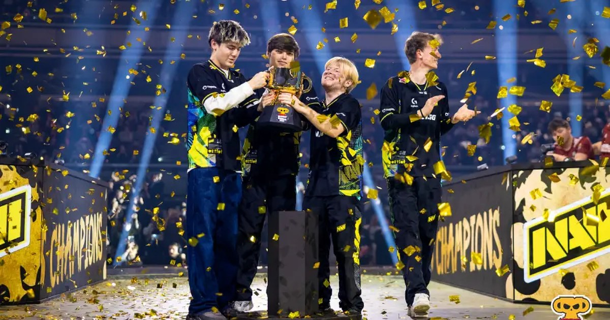

NAVI complete the miracle run, beating FUT 4-3 to win the Brawl Stars World Finals
NAVI — in through October's Last Chance Qualifier — beat FUT Esports 4-3 in a seven-set grand final in Tokyo to win the Brawl Stars World Finals 2026 and $450,000.

Disclosure: this post contains affiliate links. I earn a commission on qualifying purchases.
NAVI are Brawl Stars world champions. The team that only reached the World Finals through October's Last Chance Qualifier in China beat FUT Esports 4-3 in a seven-set grand final on Sunday at Tokyo Metropolitan Gymnasium, closing out the Brawl Stars Championship 2026 season in front of 7,000 fans and taking home $450,000 from a $1,000,000 prize pool.
A final that went the distance
NAVI carried a one-set advantage into the grand final as the upper-bracket team, then won the opening Gem Grab set to go up 2-0. FUT answered with three straight sets — Brawl Ball, Bounty and a second Gem Grab — to take a 3-2 lead and stand one set from the title. NAVI held on from there, winning Knockout and then Heist to close out the series, with the six sets actually played finishing 3-3 before the bracket advantage settled it.
It was the second time in two days NAVI had beaten FUT. The two teams had already met in the upper quarterfinals, where NAVI edged a 3-2 series that went to a deciding Hot Zone set.
The run that got them there
Nobody had NAVI penciled in for this. They arrived in Tokyo as the last team in, through the Last Chance Qualifier, and opened the group stage by beating the defending world champions, Crazy Raccoon, 3-1. A 1-3 loss to Team Elektros sent them to a decider, where they swept NOVO Esports 3-0 to reach the playoffs.
From there it was upset after upset. NAVI beat FUT 3-2 in the upper quarterfinals, knocked out HMBLE — the two-time Brawl Cup winners — 3-1 in the upper semifinals, then beat the previously unbeaten Team Elektros 3-1 in the upper final to book their place in the championship match.
The roster is Polish and British rather than Ukrainian: Łukasz "GeRo" Gerek, Edward "Enraged" Stowe and Damian "Nowy297" Nowakowski. For GeRo and Nowy297, it is a second world championship. For the 18-year-old Enraged, it is a first — and he was named the grand final MVP.
Final standings
1st: NAVI; $450,000
2nd: FUT Esports; $200,000
3rd: Team Elektros; $100,000
4th: ZETA DIVISION; $80,000
5th–6th: HMBLE, Reply Totem; $40,000
7th–8th: Tribe Gaming, Bounty Hunters; $20,000
9th–10th: NOVO Esports, Team Heretics; $15,000
11th–12th: Crazy Raccoon, RED Canids; $10,000
The defending champions finished last. Crazy Raccoon, the 2025 winners playing on home ground in Japan, went out in the group stage — beaten by NAVI in the opener and then by NOVO Esports in the elimination match.
What's next
The World Finals were the biggest edition Supercell has staged for the game, with 12 teams across three days in Tokyo. The circuit moves on quickly: the Brawl Cup heads to South Korea next, and Paris will host the Brawl Stars World Finals 2027. The new season kicks off with four regional Invitationals in January 2027.
Sources: NAVI crowned Brawl Stars World Champions as 7,000 fans celebrate historic World Finals in Tokyo (BLAST via PR Newswire) · NAVI win Brawl Stars World Finals 2026: Match results, full recap (esports.gg) · NAVI Are the Brawl Stars World Champions! (NAVI) · NAVI Wins Brawl Stars World Finals 2026 (Insider Gaming)
Watch
Source: Brawl Stars World Finals 2026 (Brawl Stars Esports) — the official World Finals broadcast from Tokyo.
Gear up: Razer — mice, keyboards, headsets and laptops.